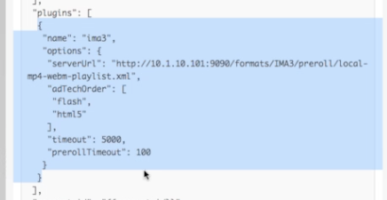

-
IMA-Einschränkung: 2 Versionen der IMA-Bibliothek, Flash- oder HTML-Version, können nicht beide verwenden
- Standardeinstellungen für das Plugin verwenden Flash falls verfügbar (da Flash-Anzeigen so weit verbreitet sind)
- In der Konfiguration können die Optionen für das Plugin standardmäßig auf HTML umschalten (adTechOrder)
- Desktop-Standard-Flash, mobiles Standard-HTML
-
Grundlegende Implementierung des IMA Plugins
- Fügen Sie JavaScript für das Plugin hinzu
- Fügen Sie dem Player das IMA-Plugin hinzu
- Stellen Sie serverURL für das Anzeigen-Tag bereit
- Beispielkonfiguration

-
Dynamisches Anzeigen-Targeting: Die Konfiguration des IMA-Plugins erfolgt nach dem Sammeln von Kundeninformationen (z. B. Alter der Zuschauer, dann Anzeigenregel auswählen).
- Fügen Sie JavaScript für das Plugin hinzu
- Rufen Sie das IMA-Plugin auf und übergeben Sie die Optionen an diesem Punkt
- meinPlayer.ima3({ serverURL: ...})
- Begleitanzeigen:: Das IMA-Plugin wird nahtlos mit linearen Anzeigen und Overlays umgehen, Begleitanzeigen können schwierig sein, da die Kommunikation zwischen dem Player und dem Rest der Seite erfolgen muss;;; Verwenden Sie die In-Page-Einbettungsimplementierung
- Verwenden Sie die GPT-Bibliothek (Google Publisher Tags) und füllen Sie die zugehörigen Anzeigenblöcke automatisch aus
- Gutes Tutorial auf der IMA-Website verfügbar
- Verwenden Sie die In-Page-Einbettungsimplementierung für Begleitanzeigen, da iframe nicht mit der übergeordneten Seite interagieren kann
- Beispiel: JS und HTML für Begleitanzeige